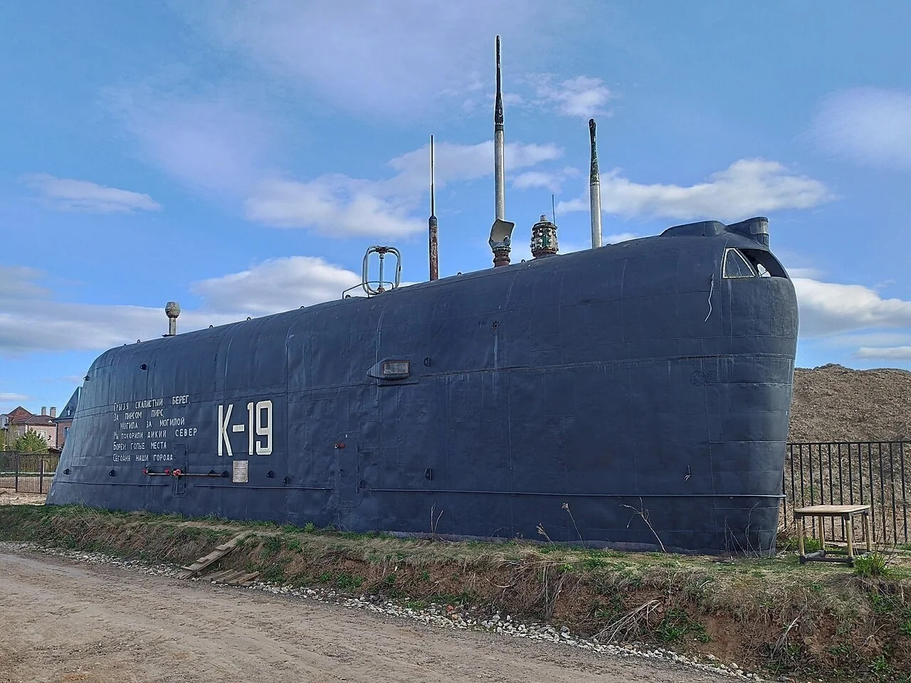
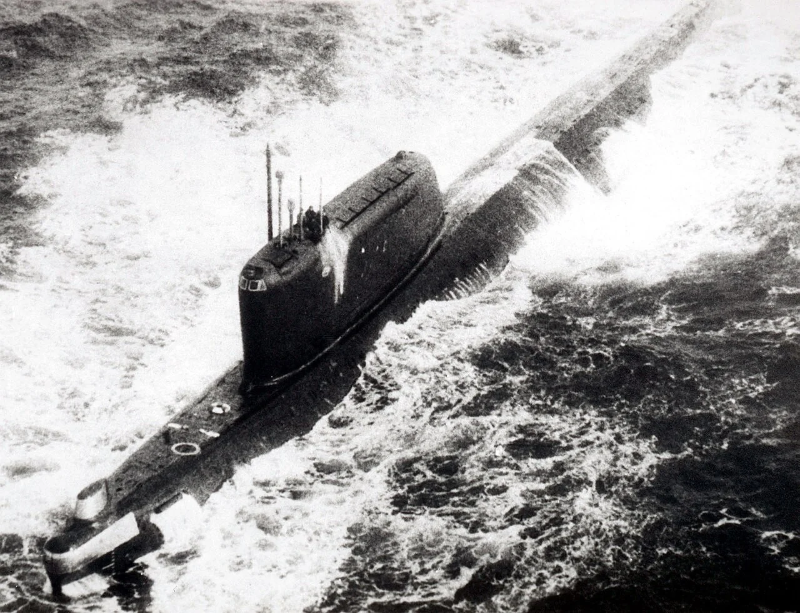
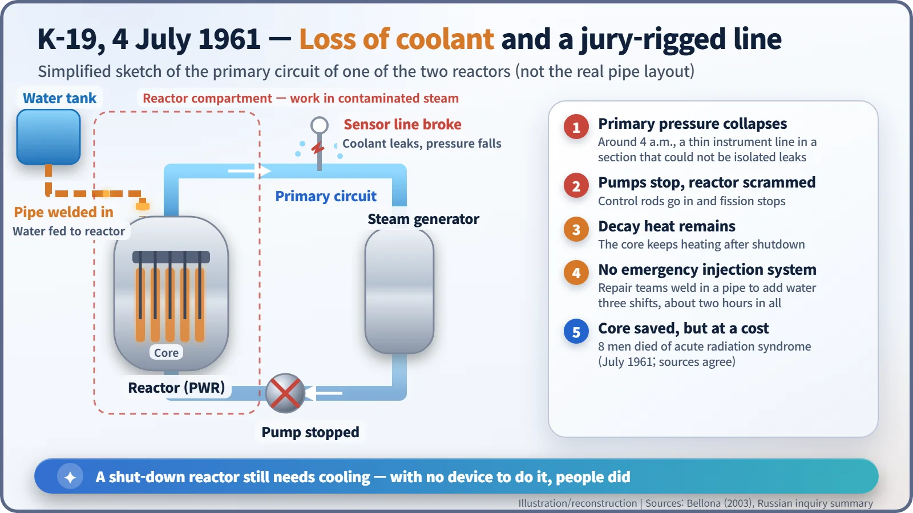
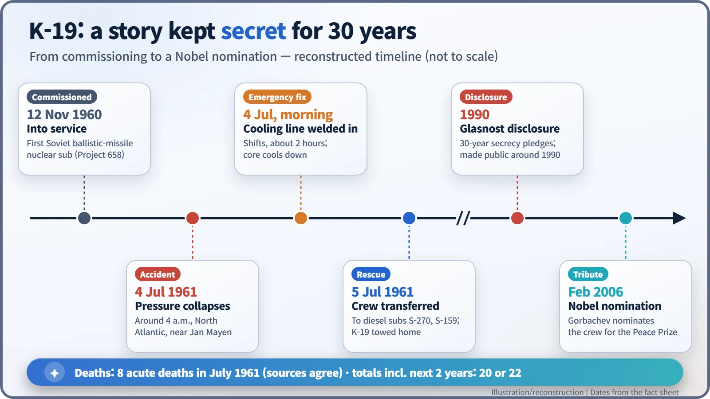

Nuclear History · 160
A Submarine Tower in a Field — The K-19 Reactor Accident, the Boat Sailors Called "Hiroshima" (1961)
With no emergency injection system aboard, K-19's crew welded in a cooling line by hand; the core was saved, the men who did it paid with their health and lives, and the story stayed secret for almost thirty years.
On 4 July 1961 one of the two reactors aboard K-19, the first Soviet nuclear-powered ballistic missile submarine, lost its primary coolant in the North Atlantic. With no emergency injection system on board, repair teams welded in a makeshift cooling line by hand. The core was saved, but eight of the men died of acute radiation syndrome within weeks, and the story stayed secret for almost thirty years.
A submarine tower in a field
Near the village of Nikulskoye, north of Moscow, a black steel structure stands beside a dirt track by a reservoir. It is the sail of a submarine, the tower that normally rises above the hull at sea, and on its side, in white letters, is painted "K-19". In the summer of 1961, beneath a tower like this one, young sailors risked their lives to cool a single overheating reactor. For almost thirty years, what they did was a Soviet state secret.

A first-of-its-kind boat, built in a hurry
By the late 1950s the Soviet Union was racing to catch up with the United States, which was putting ballistic missiles aboard nuclear-powered submarines. The Soviet answer was Project 658, known in NATO as the Hotel class, and K-19 was its lead boat: the first Soviet nuclear-powered ballistic missile submarine. Construction began in Severodvinsk in October 1958; she was launched in 1959 and entered service on 12 November 1960 (sources give slightly different launch and commissioning dates). She carried two pressurised water reactors of the VM-A type. Her commander, Captain Nikolai Zateyev (1926–1998), later criticised in his memoirs how the rush to build her had produced accidents and defects even before she sailed. [5]

4 July 1961: the needle drops
At around 4 a.m. on 4 July 1961, as K-19 was returning to base after an exercise, the pressure in the primary cooling circuit of one of her two reactors suddenly collapsed. She was in the North Atlantic near the Norwegian island of Jan Mayen, according to Russian accounts; some English-language sources place her south-east of Greenland. There were 139 men aboard. Her executive officer was Vasily Arkhipov (1926–1998), who would become famous a year later, during the Cuban Missile Crisis, for opposing the launch of a nuclear torpedo from another submarine. [2] [4]
The primary circuit is a closed loop of water that flows through the core, the heart of the reactor where the fuel sits. With the loop leaking, the circulation pumps stopped, and the control rods dropped in to shut down the chain reaction. That was not the end of the danger. Even a shut-down reactor stays hot for a long time because of decay heat from the radioactive fission products in the fuel. Think of a cast-iron pan that keeps sizzling long after you have turned off the stove. Without water circulating to carry that heat away, the fuel could melt.
K-19 had no built-in system for injecting emergency coolant into the primary circuit, as the Norwegian environmental group Bellona summarised in 2003. Zateyev decided to send repair teams into the reactor compartment to weld a new pipe into the existing pipework and feed water in. The first team was led by a 23-year-old engineer lieutenant, Boris Korchilov (1937–1961). Three teams worked in shifts for about two hours in total; water reached the reactor and the core temperature began to fall. The captain is reported to have feared a nuclear explosion, but a reactor like this cannot explode like a bomb. The real danger was core damage and a large release of radioactive material. [1] [4]

The price, and the numbers that disagree
The repair teams worked in contaminated steam and gas. Russian accounts estimate Korchilov's dose at about 54 sieverts, but this is a reconstruction made with the limited measurements of the time and should not be read as precise. What is clear is that the doses were several times higher than what can be survived. The next day the crew were transferred to the diesel submarines S-270 and S-159, and K-19 was towed home. [4]
Eight officers and sailors who had taken part in the repair died of acute radiation syndrome in the two weeks or so after 10 July 1961. On this figure of eight, the sources agree. Totals that add the deaths of the following two years differ: The Moscow Times (2006) gives 20, while several other sources give 22. The gap reflects how far each count goes in linking later deaths to radiation. [1] [3]
| Count | Figure | Source |
|---|---|---|
| Acute radiation deaths, July 1961 | 8 | Bellona (2003); Gorbachev Foundation/UPI (2006); Russian accounts |
| Total including the next two years | 20 | The Moscow Times (2006): 8 + 12 |
| Total including the next two years | 22 | Several other published accounts: 8 + 14 |
Explanations of the cause also differ. According to Russian press summaries of the inquiry's findings, a thin instrument line in a section of the circuit that could not be isolated had been damaged by over-pressure during earlier trials. Other accounts blame a crack caused by welding spatter during construction, and the retired rear admiral Nikolai Mormul argued that no pressure gauge had been fitted. [4] [5]
After thirty years of silence
The survivors signed 30-year pledges of secrecy, and the dead were buried quietly in sealed coffins. Their medical records reportedly gave a different diagnosis instead of "radiation sickness". Among sailors, K-19 became known as "Hiroshima". The accident became public around 1990, in the years of glasnost (openness). On 4 July 1998 a memorial to the crew was unveiled at Kuzminki cemetery in Moscow. In February 2006, Mikhail Gorbachev wrote to the Norwegian Nobel Committee proposing the crew for the Nobel Peace Prize, praising "the personal courage of these heroes", as UPI reported. [2] [4]
The 2002 Hollywood film K-19: The Widowmaker brought the story to a worldwide audience, but it is a loose dramatisation; even the nickname "Widowmaker" comes from the film. According to Russian press accounts, reactors of this type were later fitted with emergency injection systems. One missing piece of equipment had left a gap, and people filled it with their own bodies.
